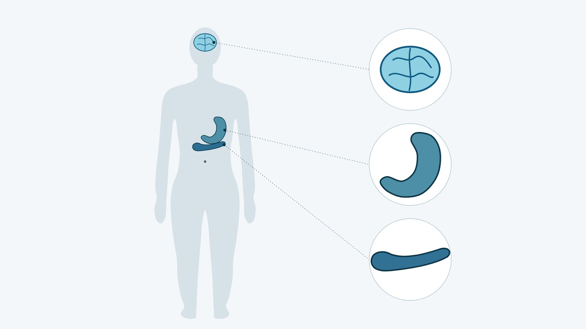

Инъекции GLP-1 для похудения: как действуют и кому показаны

Что такое инъекции GLP-1 простыми словами
Инъекции GLP-1 для похудения — это рецептурные препараты, которые действуют как собственный гормон человека GLP-1 (глюкагоноподобный пептид-1), регулирующий аппетит и количество съеденной пищи. Из всего, что продают как уколы для похудения, только у этой группы есть крупные рандомизированные исследования и одобрение регуляторов. Препараты вводят подкожно шприц-ручкой, чаще всего раз в неделю, и сочетают со сниженной калорийностью питания и физической активностью. К группе относятся семаглутид (Ozempic®, Wegovy®) и тирзепатид (Mounjaro®), который действует еще и на рецепторы гормона GIP.
GLP-1 препараты не «сжигают» жир в месте укола. Они меняют сигналы голода и сытости, человек съедает меньше, и вес снижается в основном за счет жировой ткани. Эффект сохраняется, пока продолжается лечение: после отмены вес в исследованиях возвращался.
Как они действуют
Агонисты GLP-1 влияют сразу на несколько процессов. Ниже механизм описан по европейским (EMA) и украинским инструкциям.
- Аппетит. Эффекты семаглутида на аппетит и глюкозу опосредованы рецепторами GLP-1 в мозге и поджелудочной железе. По украинской инструкции Ozempic®, по сравнению с плацебо люди съедали на 18–35 % меньше калорий при свободных приемах пищи.
- Насыщение. Усиливаются чувство сытости и наполненности, ослабевают голод и тяга к перекусам, меньше хочется жирной пищи. Для тирзепатида инструкция EMA описывает еще и меньшую тягу к сладкому.
- Глюкоза. Оба препарата усиливают выработку инсулина только тогда, когда глюкоза повышена, и снижают уровень глюкагона. Риск гипогликемии растет в основном при сочетании с инсулином или препаратами сульфонилмочевины.
- Желудок. Препараты замедляют опорожнение желудка; у тирзепатида этот эффект сильнее всего в начале лечения и со временем ослабевает. С этим связано предостережение перед общим наркозом: в желудке может оставаться пища.
В DXA-подисследовании SURMOUNT-1 (Diabetes Obes Metab, 2025) примерно 75 % потерянного на тирзепатиде веса приходилось на жир и 25 % на безжировую массу, такое же соотношение было и на плацебо. Безжировая масса включает не только мышцы, но и воду и внутренние органы.

Одобренные препараты: семаглутид и тирзепатид
Обе молекулы одобрены EMA и FDA, но различаются механизмом, данными исследований и статусом в Украине.
Семаглутид на 94 % повторяет строение человеческого GLP-1, а период полувыведения около недели позволяет вводить его раз в неделю. В Украине зарегистрированы два препарата семаглутида, оба по рецепту. Ozempic® показан при недостаточно контролируемом сахарном диабете 2 типа (СД2), и снижение веса в его показания не входит. Для контроля массы тела зарегистрирован Wegovy® с поддерживающей дозой 2,4 мг.
Данные о похудении на семаглутиде получены именно на дозе 2,4 мг. В STEP 1 (NEJM, 2021) люди без диабета за 68 недель потеряли в среднем 14,9 % массы тела против 2,4 % на плацебо. В SELECT (NEJM, 2023) семаглутид 2,4 мг на 20 % снизил риск серьезных сердечно-сосудистых событий у людей с сердечно-сосудистым заболеванием и ИМТ от 27 кг/м² без диабета. Для сравнения: у людей с СД2 на дозах Ozempic® 0,5 и 1 мг масса тела в SUSTAIN 7 (Lancet Diabetes Endocrinol, 2018) снизилась на 4,6 и 6,5 кг за 40 недель.
Тирзепатид активирует рецепторы двух гормонов, GIP (глюкозозависимого инсулинотропного полипептида) и GLP-1, а период полувыведения около 5 дней тоже позволяет вводить его раз в неделю. По инструкции EMA, на рецептор GIP он действует подобно собственному гормону, а на рецептор GLP-1 слабее природного GLP-1. Mounjaro® одобрен в ЕС с 2022 года и по действующей европейской инструкции показан при СД2 и для контроля массы тела. В США тирзепатид для контроля веса выпускают под названием Zepbound®.
В SURMOUNT-1 (NEJM, 2022) за 72 недели масса тела снизилась на 15,0–20,9 % в зависимости от дозы против 3,1 % на плацебо. В прямом сравнении SURMOUNT-5 (NEJM, 2025) люди с ожирением без диабета за 72 недели потеряли 20,2 % массы тела на тирзепатиде и 13,7 % на семаглутиде, оба препарата в максимальных переносимых дозах. Чем еще различаются молекулы, разбираем в статье Mounjaro® или Ozempic®.
Самые частые нежелательные реакции у обоих препаратов желудочно-кишечные. По европейской инструкции Mounjaro®, в исследовании снижения веса тошнота была у 24,6–33,3 % людей на тирзепатиде против 9,5 % на плацебо, и чаще всего она возникала в период повышения дозы. В STEP 1 из-за желудочно-кишечных реакций лечение прекратили 4,5 % участников на семаглутиде против 0,8 % на плацебо.
Общее ограничение обоих препаратов: после отмены вес возвращается. В SURMOUNT-4 (JAMA, 2024) люди, которых перевели с тирзепатида на плацебо, за 52 недели снова набрали в среднем 14,0 % массы тела. В продолжении STEP 1 (Diabetes Obes Metab, 2022) за год после отмены семаглутида вернулось около двух третей потерянного веса.
Исследуемые молекулы
Ретатрутид не одобрен ни одним регулятором в мире (по состоянию на октябрь 2026 года). Это исследуемая молекула компании Lilly, которая активирует три рецептора: GIP, GLP-1 и глюкагона. Компания подчеркивает, что ретатрутид нельзя законно продавать для применения людьми, а документы в FDA планирует подать в I квартале 2027 года. В Государственном реестре лекарственных средств Украины его нет (проверка 31.10.2026).
В исследовании фазы 3 TRIUMPH-1 (NEJM, 2026) масса тела за 80 недель снизилась на 17,6–25,0 % в зависимости от группы против 3,9 % на плацебо. Самые частые нежелательные явления были желудочно-кишечными; кроме того, у 5,1–12,5 % участников возникала дизестезия, то есть измененные неприятные ощущения на коже, против 0,9 % на плацебо (данные Lilly). Прямое сравнение с тирзепатидом еще идет, а основной этап исследования сердечно-сосудистых и почечных исходов ожидают завершить в 2029 году. Что известно о молекуле сейчас, собрано на странице о ретатрутиде.
Другие кандидаты тоже пока в исследованиях: CagriSema (каргилинтид вместе с семаглутидом), по данным Novo Nordisk, нигде не одобрена, а сурводутид не одобрен в США.
GLP-1, липолитики и «пептиды»: в чем разница
Под названием «уколы для похудения» или «инъекции для похудения» продают три очень разные группы средств. У них разные механизм, доказательная база и правовой статус.
| Группа инъекций | Статус (октябрь 2026) | Что доказано |
|---|---|---|
| Семаглутид (Wegovy®, Ozempic®) | одобрен EMA и FDA; в Украине зарегистрированы Wegovy® для контроля массы тела и Ozempic® для СД2, оба по рецепту | STEP 1: −14,9 % массы тела против −2,4 % за 68 недель; SELECT: на 20 % меньше серьезных сердечно-сосудистых событий |
| Тирзепатид (Mounjaro®) | одобрен EMA и FDA; статус в Украине: [РЕШЕНИЕ ВЛАДЕЛЬЦА: вопрос №4] | SURMOUNT-1: от −15,0 до −20,9 % против −3,1 % за 72 недели; SURMOUNT-5: −20,2 % против −13,7 % на семаглутиде |
| Лираглутид (Saxenda®) | в Украине зарегистрирован, по рецепту; инъекции ежедневно | SCALE (NEJM, 2015): −8,4 кг против −2,8 кг за 56 недель |
| Ретатрутид | исследуемая молекула, не одобрена ни одним регулятором; в Украине не зарегистрирован | фаза 3: от −17,6 до −25,0 % против −3,9 % за 80 недель; безопасность еще изучают |
| Липолитики | дезоксихолевая кислота (Kybella®) одобрена FDA только для жира под подбородком; смеси для тела FDA не одобряло | показания для похудения нет; FDA описывает рубцы, инфекции, болезненные узлы |
| «Пептиды» (BPC-157, AOD-9604) | не одобрены как лекарства; WADA запрещает оба вещества | у FDA недостаточно данных, вредят ли они человеку |
Липолитики — это инъекции, которые должны «растворять» жир в месте введения. Единственное одобренное FDA вещество такого типа, дезоксихолевая кислота (Kybella®), показано только для уменьшения жира под подбородком; для других участков оно не одобрено и не рекомендовано. 15.09.2026 FDA добавило в его инструкцию предупреждение: при введении вне подбородочной зоны возможны серьезные нервно-мышечные осложнения, а узлы в месте укола могут не проходить и требовать лечения. В украинском реестре лекарственных средств инъекционной дезоксихолевой кислоты нет.
Смеси фосфатидилхолина с дезоксихолатом для тела FDA не одобряло и предупреждает, что их безопасность и эффективность агентство не оценивало. Среди зарегистрированных осложнений FDA называет стойкие рубцы, серьезные инфекции, деформации кожи, кисты и глубокие болезненные узлы. Ни один липолитик не имеет показания для лечения ожирения или снижения массы тела.
«Пептиды для похудения» — собирательное название неодобренных веществ вроде BPC-157 или AOD-9604, которые продают онлайн. FDA указывает, что у него недостаточно данных, чтобы знать, вредят ли они человеку, и предупреждает о риске иммуногенности (реакции иммунной системы на пептид) и примесей; для AOD-9604 агентство описывает и серьезные нежелательные явления, причинная связь которых не установлена. Раньше FDA относило оба вещества к категории, которая может представлять значительный риск при аптечном изготовлении, а по состоянию на 22.04.2026 они в перечне субстанций, номинации которых заявители отозвали. Всемирное антидопинговое агентство (WADA) в 2026 году запрещает BPC-157 как неодобренное вещество, а AOD-9604 как фрагмент гормона роста.
С пометкой «для исследований» или «не для людей» продают и семаглутид, тирзепатид или ретатрутид. FDA предупреждало компании, которые так продавали эти вещества напрямую людям, и советует не пользоваться такими продуктами, потому что их качество неизвестно.
Кому показаны и кто назначает
По европейским инструкциям Wegovy® и Mounjaro® инъекции для контроля массы тела показаны взрослым с индексом массы тела (ИМТ) от 30 кг/м² (в украинской инструкции Wegovy® — более 30 кг/м²) или от 27 до 30 кг/м² при наличии хотя бы одного связанного с весом заболевания. Это предиабет или СД2, гипертензия, дислипидемия, обструктивное апноэ сна или сердечно-сосудистое заболевание. Британский NICE для государственной медицины ставит более высокие пороги: для тирзепатида ИМТ от 35 кг/м² и сопутствующее заболевание (TA1026). Оценить свой ИМТ и факторы риска поможет тест на похудение.
Ситуации, когда нужна особая осторожность или препарат не подходит:
- беременность и ее планирование: во время беременности семаглутид 2,4 мг не применяют, а тирзепатид не рекомендован; отменяют их минимум за 2 и за 1 месяц до запланированной беременности соответственно;
- панкреатит в прошлом;
- тяжелые болезни желудочно-кишечного тракта, в том числе тяжелый гастропарез;
- диабетическая ретинопатия, которая требует наблюдения;
- прием инсулина или препаратов сульфонилмочевины из-за риска гипогликемии;
- запланированная операция под общим наркозом или глубокой седацией;
- медуллярный рак щитовидной железы у вас или родственников либо синдром MEN 2 у вас: в инструкциях FDA это противопоказание, в европейских — нет;
- возраст до 18 лет: тирзепатид для контроля веса в ЕС показан только взрослым, Wegovy® подросткам от 12 лет по отдельным критериям.
Инъекции GLP-1 отпускаются по рецепту, и схему лечения определяет врач. Эндокринолог оценивает показания и противопоказания, сопутствующие болезни и лекарства, которые вы принимаете, при необходимости назначает анализы. По инструкциям дозу повышают постепенно, в течение нескольких месяцев, а темп и поддерживающую дозу выбирает врач. Endocrine Society советует оценивать эффект и безопасность минимум ежемесячно первые 3 месяца, а дальше минимум раз в 3 месяца.
В Avelis Clinic первая консультация эндокринолога онлайн и бесплатная. Врач ведет курс, подбирает и корректирует дозу, а специалист на связи 24/7. Более широкий обзор всех классов лекарств, включая таблетки, есть на странице о медикаментозном лечении ожирения.
[КОММЕНТАРИЙ ВРАЧА: на что эндокринолог обращает внимание, когда решает, подходят ли человеку инъекции GLP-1]
Частые вопросы
Какие уколы для похудения существуют?
Одобрение регуляторов и крупные исследования есть у агонистов GLP-1: семаглутида (Wegovy®, раз в неделю), лираглутида (Saxenda®, ежедневно) и двойного агониста GIP/GLP-1 тирзепатида (Mounjaro®, раз в неделю). Ретатрутид пока только исследуют, и он нигде не одобрен. У липолитиков для тела и «пептидов» вроде BPC-157 нет одобренных показаний для похудения.
Можно ли колоть без врача?
Сам укол по инструкции делают самостоятельно: шприц-ручки предназначены для введения под кожу живота, бедра или плеча (для Mounjaro® в плечо колоть должен другой человек). Но выбрать препарат, начать лечение и менять дозу без врача нельзя, потому что это рецептурные лекарства с противопоказаниями и предостережениями. FDA также получало сообщения о нежелательных явлениях, часть из которых потребовала госпитализации и которые могут быть связаны с ошибками в дозировании аптечных (компаундированных) версий семаглутида.
Опасны ли «пептиды»?
Их безопасность не доказана. FDA указывает, что у него недостаточно данных, вредят ли BPC-157 и AOD-9604 человеку, и предупреждает о риске иммунных реакций и примесей, а WADA запрещает оба вещества. Отдельно FDA предупреждает, что GLP-1-продукты с пометкой «для исследований» имеют неизвестное качество и могут навредить здоровью.
Убирают ли уколы в живот жир на животе?
Нет, место укола не определяет, откуда уйдет жир. По инструкциям FDA для Wegovy® и Zepbound®, при введении в живот, бедро или плечо концентрация препарата в крови одинаковая. Препарат действует через рецепторы в мозге и поджелудочной железе, и по европейской инструкции Mounjaro® снижается в том числе висцеральный жир внутри брюшной полости.
Что дальше
Тест на похудение за 3 минуты оценит ИМТ, талию и факторы риска и подготовит к разговору с врачом. Если показания для инъекций GLP-1 есть, эндокринолог на бесплатной онлайн-консультации обсудит варианты, противопоказания и план наблюдения.
Источники
- Государственный реестр лекарственных средств Украины, проверка 31.10.2026: инструкции Оземпік® и Вегові® ФлексТач®, запись Саксенда®; ретатрутид и инъекционная дезоксихолевая кислота не найдены. http://www.drlz.com.ua/
- EMA. Ozempic: EPAR, Product Information. https://www.ema.europa.eu/en/documents/product-information/ozempic-epar-product-information_en.pdf
- EMA. Wegovy: EPAR, Product Information. https://www.ema.europa.eu/en/documents/product-information/wegovy-epar-product-information_en.pdf
- EMA. Mounjaro: EPAR, Product Information. https://www.ema.europa.eu/en/documents/product-information/mounjaro-epar-product-information_en.pdf
- ZEPBOUND (tirzepatide) US Prescribing Information. DailyMed, 2026. https://dailymed.nlm.nih.gov/dailymed/drugInfo.cfm?setid=487cd7e7-434c-4925-99fa-aa80b1cc776b
- WEGOVY (semaglutide) US Prescribing Information. DailyMed, 2026. https://dailymed.nlm.nih.gov/dailymed/drugInfo.cfm?setid=ee06186f-2aa3-4990-a760-757579d8f77b
- Wilding JPH et al. Once-Weekly Semaglutide in Adults with Overweight or Obesity (STEP 1). N Engl J Med, 2021. https://doi.org/10.1056/NEJMoa2032183
- Wilding JPH et al. Weight regain and cardiometabolic effects after withdrawal of semaglutide: The STEP 1 trial extension. Diabetes Obes Metab, 2022. https://doi.org/10.1111/dom.14725
- Lincoff AM et al. Semaglutide and Cardiovascular Outcomes in Obesity without Diabetes (SELECT). N Engl J Med, 2023. https://doi.org/10.1056/NEJMoa2307563
- Pratley RE et al. Semaglutide versus dulaglutide once weekly in patients with type 2 diabetes (SUSTAIN 7). Lancet Diabetes Endocrinol, 2018. https://doi.org/10.1016/S2213-8587(18)30024-X
- Jastreboff AM et al. Tirzepatide Once Weekly for the Treatment of Obesity (SURMOUNT-1). N Engl J Med, 2022. https://doi.org/10.1056/NEJMoa2206038
- Look M et al. Body composition changes during weight reduction with tirzepatide in the SURMOUNT-1 study. Diabetes Obes Metab, 2025. https://pubmed.ncbi.nlm.nih.gov/39996356/
- Aronne LJ et al. Continued Treatment With Tirzepatide for Maintenance of Weight Reduction in Adults With Obesity (SURMOUNT-4). JAMA, 2024. https://doi.org/10.1001/jama.2023.24945
- Aronne LJ et al. Tirzepatide as Compared with Semaglutide for the Treatment of Obesity (SURMOUNT-5). N Engl J Med, 2025. https://doi.org/10.1056/NEJMoa2416394
- Pi-Sunyer X et al. A Randomized, Controlled Trial of 3.0 mg of Liraglutide in Weight Management (SCALE). N Engl J Med, 2015. https://pubmed.ncbi.nlm.nih.gov/26132939/
- Jastreboff AM et al. Retatrutide, a Triple Hormone Receptor Agonist, for Treatment of Obesity (TRIUMPH-1). N Engl J Med, 2026. https://doi.org/10.1056/NEJMoa2604169
- Eli Lilly. Пресс-релизы о ретатрутиде: 21.05.2026 (TRIUMPH-1), 23.07.2026 (подача в FDA в I квартале 2027 года), 28.10.2026 (статус). https://www.prnewswire.com/news-releases/lillys-triple-agonist-retatrutide-delivered-powerful-weight-loss-in-pivotal-phase-3-obesity-trial-302778859.html ; https://www.prnewswire.com/news-releases/lillys-triple-agonist-retatrutide-successful-in-two-additional-phase-3-obesity-trials-delivering-significant-improvements-in-weight-and-a1c-302832674.html ; https://www.prnewswire.com/news-releases/lillys-retatrutide-delivered-greater-a1c-reduction-and-more-than-double-the-weight-loss-of-ozempics-highest-approved-dose-in-head-to-head-trial-302921328.html
- Novo Nordisk, пресс-релиз 29.10.2026 (статус CagriSema). https://www.prnewswire.com/news-releases/novo-to-present-new-cagrisema-and-wegovy-data-at-obesityweek-2026-including-data-on-treatment-experience-with-wegovy-pill-in-the-real-world-302923603.html
- ClinicalTrials.gov: TRIUMPH-5 (NCT06662383), TRIUMPH-Outcomes (NCT06383390). https://clinicaltrials.gov/
- FDA. FDA's Concerns with Unapproved GLP-1 Drugs Used for Weight Loss, 2026. https://www.fda.gov/drugs/drug-alerts-and-statements/fdas-concerns-unapproved-glp-1-drugs-used-weight-loss
- KYBELLA (deoxycholic acid) US Prescribing Information. DailyMed, 2026. https://dailymed.nlm.nih.gov/dailymed/drugInfo.cfm?setid=fe431ed4-ea6f-4e99-b4bc-ec25ae7b8553 ; FDA Drug Safety Communication, 15.09.2026. https://www.fda.gov/drugs/drug-safety-communications/fda-approves-additional-information-labeling-kybella-deoxycholic-acid-injection-warning-adverse
- FDA. Using Fat-Dissolving Injections That Are Not FDA Approved Can Be Harmful, 2023. https://www.fda.gov/drugs/buying-using-medicine-safely/using-fat-dissolving-injections-are-not-fda-approved-can-be-harmful
- FDA. Certain Bulk Drug Substances for Use in Compounding that May Present Significant Safety Risks. https://www.fda.gov/drugs/human-drug-compounding/certain-bulk-drug-substances-use-compounding-may-present-significant-safety-risks
- WADA. The Prohibited List 2026. https://www.wada-ama.org/en/prohibited-list
- NICE. Tirzepatide for managing overweight and obesity (TA1026), 2024. https://www.nice.org.uk/guidance/ta1026/chapter/1-Recommendations
- Apovian CM et al. Pharmacological management of obesity: an Endocrine Society clinical practice guideline. J Clin Endocrinol Metab, 2015. https://pubmed.ncbi.nlm.nih.gov/25590212/
Материал носит информационный характер и не заменяет консультацию врача. Препараты назначает врач после консультации.
Читайте также